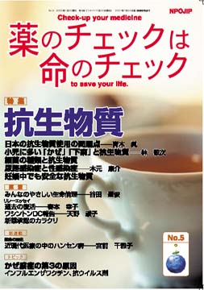

No.5 特集 抗生物質 2004年2月 第2刷発行 （絶版）
4年前まで37種類も市場に出回っていたいわゆる「抗痴呆薬＝脳循環代謝改善剤」が効かないため次々と消え去り、とうとう6種類になりました。（2001年11月現在）残っているものもイギリスやアメリカ、オーストラリアでは全く使用されていません。この脳代謝改善剤に象徴されるように、日本では、効果が確かでないもの、危険なものでも、臨床試験のお墨付きによって、「よく効く」「安全」な「よい薬」という評価を受けて「高い値段」がつけられて、「高価＝優秀」というイメージで宣伝され、たくさん使用されてきました。これが薬害のもとにもなってきたと言えます。
では抗生物質はどうでしょうか。
抗生物質に関するかぎり、一部を除けば、「効かない」ということはありません。目的別にきちんと使用すれば、確かによく効きます。これまでに効かなかったような菌によく効く抗生物質が開発されて「高薬価」になる場合は納得もできます。ところが、ごく特別な状況でしか使用すべきでない強力な抗生物質が、日常的にありあふれた状態でも使用されています。そのため、その抗生物質でなければ効かないという肝心な時に効かなくなる、といった問題が生じてきています。これは単に現場だけが悪いのではありません。その指導をすべき教育病院の専門医も適切な使用をしていないために不適切な使用法が蔓延しているのです。
まずQ&Aコーナーで抗生物質についてぜひとも知っていただきたい基本的な話をします。そして、抗生物質をめぐる全体の問題を、現在抗生物質の適切な使用方法に関する日本の第一人者である青木眞さん（東海大学医学部非常勤教授、抗生物質使用の教育に熱心に取り組んでおられる）に解説していただきます。
小児に多いかぜや下痢（腸炎）に対する抗生物質の使用問題は小児科医で高槻赤十字病院リハビリテーション科の林敬次さん、膀胱炎など尿路感染症と性感染症については総合せき損センター泌尿器科の木元康介さんが解説します。
抗生物質は大変重要な薬剤です。じっくりと、より深く知っていただくには1回では書ききれませんでした。
そこで手術後の感染防止のための適切な使用方法、耐性菌の問題、命にかかわる抗生物質の副作用などは、次号で解説します。
また抗生物質の種類と、それぞれの評価については、NPOJIP編集部で検討した結果は一部40ページに載せていますが詳しくは次号にご紹介します。
（絶版）
もくじ
■海外からのメッセージ
ジル・バードレー氏 （ラ･レビュー・プレスクリル総編集長、フランス）
特集
■抗生物質とはどういう薬か？ Q&A
■日本の抗生物質使用の問題点
■小児に多い「かぜ」「下痢」と抗生物質
■細菌の種類と抗生物質
■尿路感染症と性感染症
■抗生物質治療で大切な考え方
■患者用薬の説明書（NPOJIPの判定付き）
・ペニシリン系抗生物質
■コラム
インフルエンザ・インフルエンザワクチン・抗ウイルス剤
■読者の声
・「心臓弁膜症で二弁置換術を受けた者にとって、かぜのときに抗生物質は必要か？」
・「TIP誌とNPOJIPとの関係は？ NPOJIP誌ってなあに？」
連載
■リレーエッセイ 過去の復活
■みんなのやさしい生命倫理 ５ 同等性試験の生命倫理
■新薬承認のカラクリ
「抗痴呆剤」承認の根拠は？
■ワシントンDC報告（３）
パーグ（PIRG=Public Interst Research Group）
■Coffeeぶれいく
宣伝に騙されないために（２） 糖尿病用薬剤「ベイスン」
■映画 リチャード・ドレイファス
新連載
■薬害の歴史 １
近代医療の中のハンセン病
トピック
■かぜ関連脳症の第3の原因
低血糖を起こす薬剤
提言
■NPOJIPの提言
よく効く抗生物質は大事に使う工夫を
■NPOJIPおよび関連の出版物案内
■出版書籍申込み用紙
■読者の意見／感想用紙
■編集後記
病院でよく聞く言葉
（特集にちなんだ言葉を簡潔に解説）忙しい人はまずここから
○抗生物質 −次々と耐性菌出現
○感染症 −微生物などで発病
○MRSA −特効薬が効かない薬も
○抗菌剤 −合成された化学物質
○抗痴ほう剤の副作用 −体の動きが悪くなる
（日本経済新聞に浜六郎が掲載していたものを改変。加筆、新しく追加したものを含む）
トピックから
かぜ関連脳症の重大な原因
1)非ステロイド解熱剤、2)けいれん誘発剤
第3は「低血糖を起こす薬剤」−抗ヒスタミン剤と痰切り剤か？−
日本のインフルエンザ脳症の多くに、非ステロイド抗炎症剤系解熱剤（NSAIDs解熱剤と略）が関与していることは、今さら言うまでもありません。これまで、NPOJIPが大変重視し、あらゆる機会に訴えてきたとおりです。そのためもあってか、国でもようやく認めるようになってきました。また、別の原因として、喘息薬のテオフィリンなどケイレンを誘発する薬剤の重要性についてもTIP誌や本誌でもとりあげました。
最近相談を受けた中に、かぜの後で重い障害を残した脳症の原因として、低血糖症が関係し、その子の症状や経過、どうして薬剤が関係するのかについて、皆さんも一緒に考えてほしいと思います。
（以下、引用省略）
詳しくは本誌で。
（絶版）